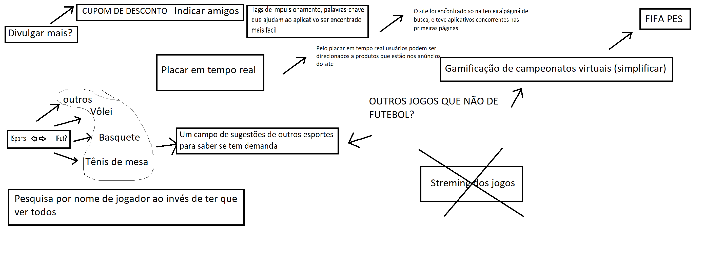

Brainstorming
Histórico de Versão
| Data | Versão | Descrição | Autor(es) |
|---|---|---|---|
| 19.09.2020 | 0.1 | Criação do documento e adição da metodologia | Bruna Almeida |
| 23.09.2020 | 0.2 | Adição do brainstorming | Geraldo Victor |
| 26.09.2020 | 0.3 | Adição da tabela de versionamento | Geraldo Victor |
Metodologia
Brainstorming é uma técnica que consiste em uma ou várias reuniões que permitem que as pessoas sugiram e explorem ideias, o que pode levar a soluções criativas para o problema. O número de ideias geradas deve ser bem grande, pois quanto mais ideias forem propostas, maior será a chance de aparecerem boas ideias. Os participantes também devem ser encorajados a combinar ou enriquecer as ideias uns dos outros.
Nesta técnica é designada uma pessoa para registrar todas as ideias. À medida que as ideias forem surgindo, elas devem ser expostas de forma que todos os participantes possam vê-la. Analisar as ideias é a fase final do brainstorming. Nessa fase é realizada uma revisão das ideias, uma de cada vez. As consideradas valiosas pelo grupo são mantidas e classificadas em ordem de prioridade.
(Sommerville, 2003)
Participantes
- Bruna Almeida
- Damarcones dos Santos
- Geraldo Victor
- Isabella Carneiro
- Lucas Lopes
Resultado
Após uma reunião remota foi discutido quais seriam ideias que poderam ser interessantes para o iFut.
Através das ideias os seguintes requisitos foram levantados.

| Número | Requisito |
|---|---|
| 1 | O usuário deve poder indicar amigos para poder ganhar cupons de desconto para seu plano |
| 2 | O usuário deve poder ver placar do jogo em tempo real |
| 3 | O usuário deve poder pesquisar jogador por nome para saber sua pontuação |
| 4 | O usuário deve poder criar campeonatos virtuais de maneira simplificada |
| 5 | O usuário deve poder sugerir a inclusão de outros esportes no aplicativo tanto reais quanto virtuais |
| 6 | O sistema deve poder ter alguma tecnologia de impulsionamento nas pesquisas |
Requisito 1
O grupo chegou a conclusão que faz sentido que o aplicativo invista em publicidade para tornar-se mais conhecido, esse marketing por meio de cupons é bastante utilizado atualmente.
Requisito 2
O grupo chegou a concluiu que ter um placar no jogo em tempo faz com que pessoas acessem o aplicativo para ver o placar e possivelmente aumente a chance de comprar algum dos produtos dos patrocinadores já que o aplicativo contém anúncios.
Requisito 3
O grupo chegou a concordou que poder buscar um jogador pelo nome traz facilidade ao usuário para que ele ache as estatísticas do jogador que deseja acompanhar.
Requisito 4
Foi de comum acordo por todos os integrantes que seria interessante ter uma maneira facilitada de criar um campeonato para categoria virtual.
Requisito 5
Por mais que não seja o escopo do aplicativo outros esportes, talvez possa existir a chance de um aplicativo mais abrangente ter uma demanda de mercado maior do que somente a de futebol, foi essa a conclusão que o grupo chegou.
Requisito 6
Ao fazer uma simples pesquisa foi constatado que o aplicativo em questão não aparecia nas primeiras página o que consequentemente ajuda a concorrência. O grupo reconheceu que nesse quesito o aplicativo poderia se beneficiar implementando em seu sistema algum mecanismo de impulsionamento.
A discussão sobre esses requisitos pode ser encontrada no link de video.